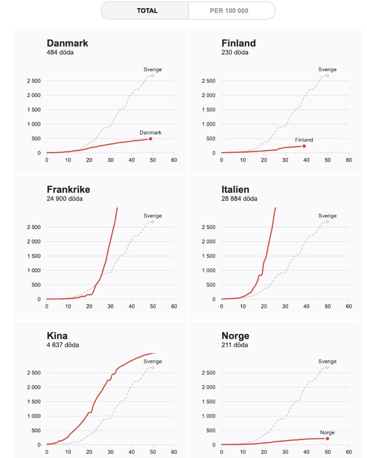
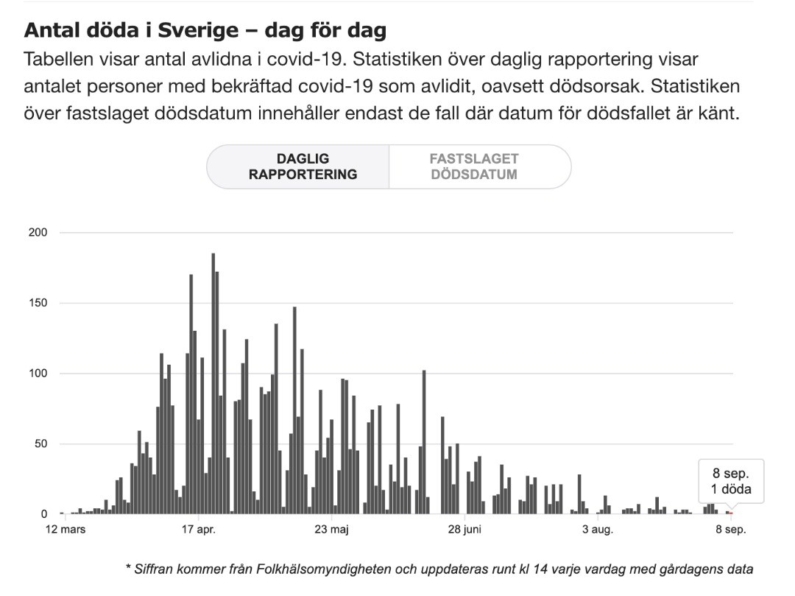
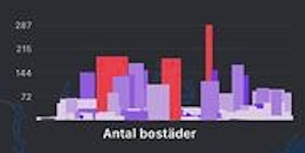
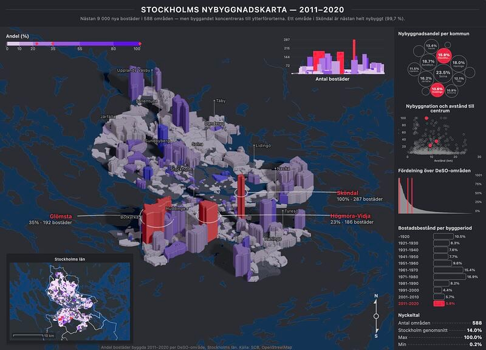
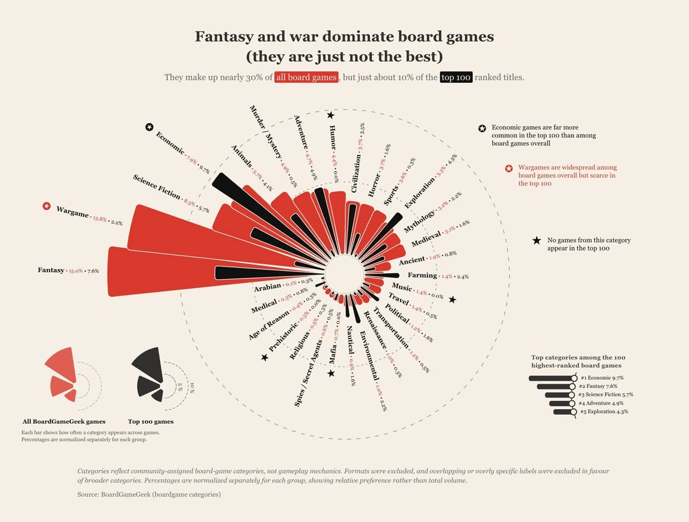
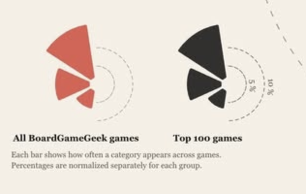
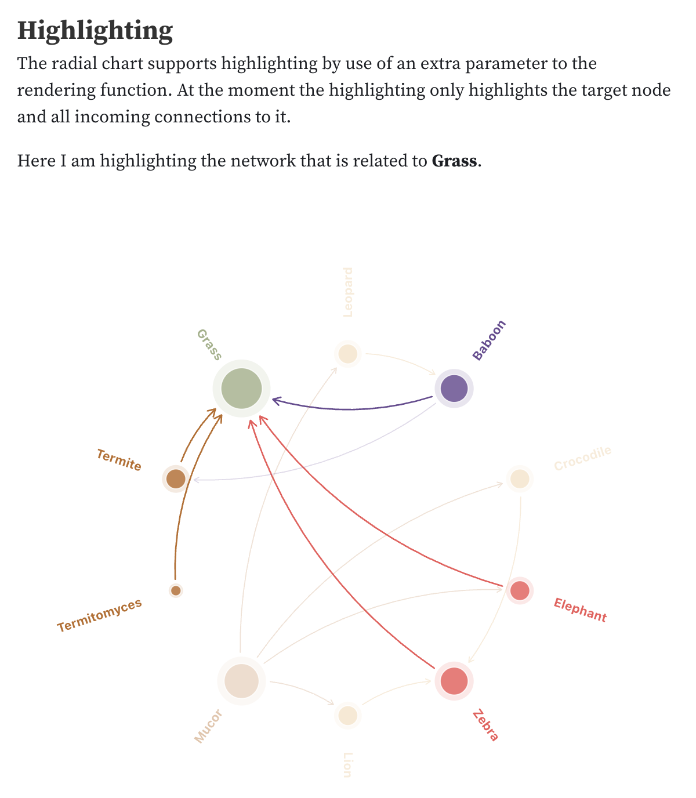
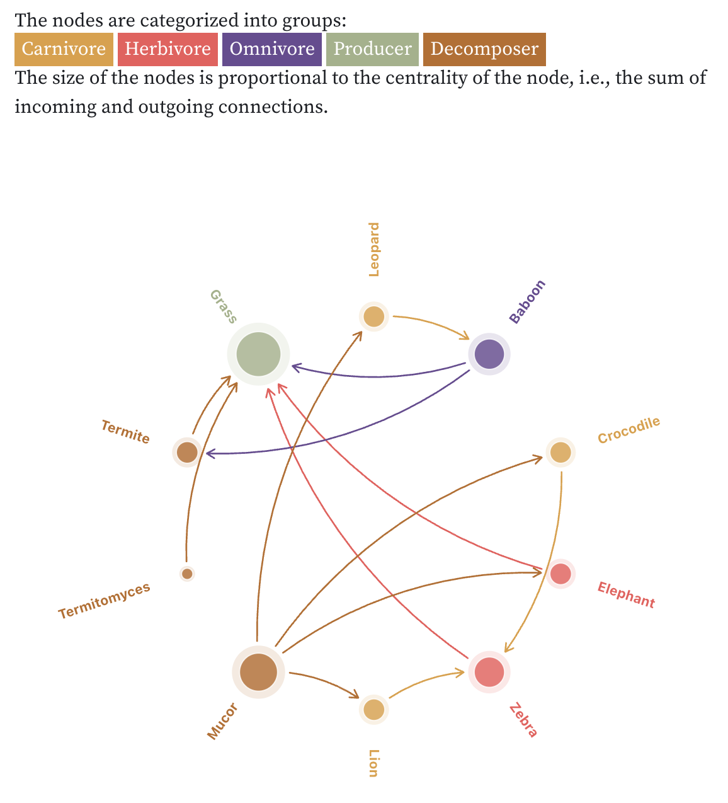

Senior data visualisation
engineer.
Interactive tools, dashboards, and data stories for research, journalism, and mission-driven teams.
Available for freelance collaborations.
Client work
Most of what I build is internal: exploratory tools, dashboards, and analysis interfaces that teams use to find answers rather than read conclusions. The work is confidential; the clients are not.
What I do
I design and build interactive data products, — from internal analysis tools to public-facing data stories, — helping organisations turn complex data into things people can act on.
- Interactive graphics that explain difficult topics to broad audiences
- Decision-support tools for analysts, researchers, and policy teams
- Narrative reports that combine analysis, maps, and interactive graphics
- Production-ready data-driven frontends from concept to launch
Why clients bring me in
- Turn messy datasets into clear visual explanations
- Build production-ready interactive tools, not just mockups
- Work comfortably with researchers, journalists, and analysts
- Senior frontend engineer who understands design
- Take projects from concept through to shipped application
How I work
- Join existing product or editorial teams as a specialist
- Collaborate directly with data scientists and designers
- Production-ready React and Svelte code
- Accessible, responsive visualisations
- Available for fixed-scope projects or embedded engagements
Typical engagements
- Interactive reports and explainers for public-facing audiences
- Data exploration tools for analysts and researchers
- Custom dashboards beyond off-the-shelf BI tools
- Embedded senior dataviz / frontend engineering on a team
Sectors I've worked in
- Journalism and media
- Research and academia
- NGOs and international development
- Finance, startups, elections, and infrastructure security
Selected work
Covid-19 Dashboard
Sweden's most-viewed COVID dashboard, maintained across the full arc of the pandemic. As the public story shifted, the dashboard was continually rebuilt to track what mattered at each stage, — a live data product that had to keep evolving for years.




Anomaly Front Page
The problem: surfacing
the anomalies that matter from terabytes of mostly time-series
data.
The approach:
a monitoring tool structured as a
newspaper front page, — auto-generated text
turns detected outliers into ranked, readable stories, some
shared across teams, some personalised, each linked to a
root-cause view.
Built
with data scientists and engineers on the underlying outlier
detection.
Disputed Borders
Makes disputed territories comparable at a glance for researchers and journalists covering geopolitics. Small multiples over one crowded map, — each region normalised so sparse continents stay legible.


The last decade saw more nations decline in democratic score than any period since the second world war.
Erosion of European Democracy
A V-Dem exploration — not one chart but a series of views built to answer different questions. Europe's democratic high point was 2011; since then, 33 of 39 countries have lost ground. A diverging heatmap makes year-on-year change scannable by region; a slope chart pulls out the decade's winners and losers — 32 countries backsliding, 11 improving between 2012 and 2022.

Stockholm New Builds
3D extrusion to make a decade of building data immediate and legible. Turns abstract permit records into a physical landscape that a broad, non-expert audience can explore and understand. The detail view reads as both a city silhouette and a bar chart — geography and volume in the same shape.



After trying layouts that were clearly too complex, this settled as a radial grouped bar chart — readable enough, but with visual pull. The "sea shell porcupine" layout was one of the first things I tried. I spent real effort on the annotations and inset chart: for static visualisations, if the goal is communication rather than exploration, context has to live in the chart.
A long-held idea, finally built. BoardGameGeek's dataset is large, opinion-driven, and messy — I wanted to see how the games I play relate to the roughly 30,000 on the site. Given how inconsistent the data is, starting with categories felt like a sensible first step... ha!

Fantasy & War Dominate Board Games
Dependencies Graph
Maps who depends on whom across initiatives — not just what's next on the roadmap. A first sketch took under an hour and surfaced connections a timeline couldn't; you lose the time dimension, but gain a view of the relationships that actually shape delivery. Highlighting incoming links lets you follow everything that feeds a single node.


roadmaps show what's next — this shows what depends on what
Need an experienced data visualisation specialist? I collaborate with studios, research teams, and mission-driven organisations on projects from exploratory tools to public-facing interactive stories.
Get in touchAbout
My background combines software engineering, journalism, machine learning, and disaster management. That mix has naturally led me toward projects where data affects public understanding and decision-making.
Over the years I've built data visualisation systems across newspapers, financial analytics, knowledge management, and network analysis, — from Sweden's most-viewed COVID dashboard at Aftonbladet to financial analytics tools at Spotify. Most of that work happens inside companies and can't be shown publicly; the personal projects here reflect the range of what I do independently.
I work best where standard dashboards or off-the-shelf BI tools aren't enough, collaborating closely with researchers, data scientists, and journalists. In senior roles I've led teams, mentored developers, and taught data visualisation courses.
Also
- Founder, Explained studio
- Organiser, DataViz Stockholm
- Senior engineer, Datastory
Education
- MSc Machine Learning, UCL
- MA Disaster Mgmt, KU